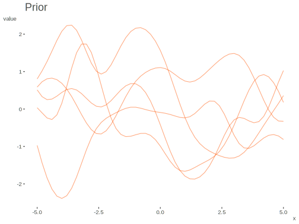
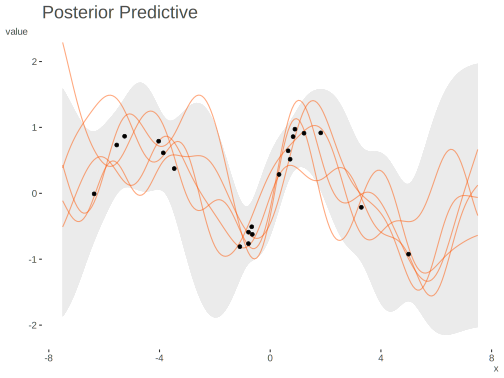
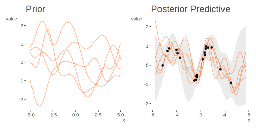

Gausian Processes
‘Noise-free’ gaussian process demo. The matrix labeling is in keeping with Murphy 2012 and Rasmussen and Williams 2006. See those sources for more detail. Murphy’s original Matlab code can be found here, though the relevant files are housed alongside this code in my original repo (*.m files).
The goal of this code is to plot samples from the prior and posterior predictive of a gaussian process in which y = sin(x). It will reproduce figure 15.2 in Murphy 2012 and 2.2 in Rasmussen and Williams 2006.
Noise-Free Demonstration
Data Setup
library(tidyverse)
l = 1 # for l, sigma_f, see note at covariance function
sigma_f = 1
k_eps = 1e-8 # see note at K_starstar
n_prior = 5 # number of prior draws
n_post_pred = 5 # number of posterior predictive drawsGenerate noise-less training data.
Functions
The mean function. In this case the mean equals 0.
The covariance function. Here it is the squared exponential kernel. l is the horizontal scale, sigma_f is the vertical scale.
Visualize the prior distribution
Data setup.
x_prior = seq(-5, 5, .2)
y_prior = MASS::mvrnorm(
n = n_prior,
mu = gp_mu(x_prior),
Sigma = gp_K(x_prior, l = l, sigma_f = sigma_f)
)prior_data = data.frame(
x = x_prior,
y = t(y_prior),
sd = apply(y_prior, 2, sd)) %>%
pivot_longer(-c(x, sd), names_to = 'variable')
g1 = ggplot(aes(x = x, y = value), data = prior_data) +
geom_line(aes(group = variable), color = '#FF5500', alpha = .5) +
labs(title = 'Prior') +
theme_minimal()
g1
Generate the posterior predictive distribution
Create K, K*, and K** matrices as defined in the texts.
K = gp_K(X_train, l = l, sigma_f = sigma_f)
K_ = gp_K(c(X_train, X_test), l = l, sigma_f = sigma_f) # initial matrix
K_star = K_[1:n_train, (n_train+1):ncol(K_)] # dim = N x N*
tK_star = t(K_star) # dim = N* x N
K_starstar = K_[(n_train+1):nrow(K_), (n_train+1):ncol(K_)] + # dim = N* x N*
k_eps * diag(n_test) # the k_eps part is for positive definiteness
Kinv = solve(K)Calculate posterior mean and covariance.
post_mu = gp_mu(X_test) + t(K_star) %*% Kinv %*% (y_train - gp_mu(X_train))
post_K = K_starstar - t(K_star) %*% Kinv %*% K_star
s2 = diag(post_K)
# R = chol(post_K)
# L = t(R) # L is used in alternative formulation below based on gaussSample.mGenerate draws from posterior predictive.
Visualize the Posterior Predictive Distribution
Reshape data for plotting and create the plot.
pp_data = data.frame(
x = X_test,
y = y_pp,
se_lower = post_mu - 2 * sqrt(s2),
se_upper = post_mu + 2 * sqrt(s2)
) %>%
pivot_longer(starts_with('y'), names_to = 'variable')
g2 = ggplot(aes(x = x, y = value), data = pp_data) +
geom_ribbon(aes(ymin = se_lower, ymax = se_upper, group = variable),
fill = 'gray92') +
geom_line(aes(group = variable), color = '#FF5500') +
geom_point(aes(x = X_train, y = y_train), data = data.frame(X_train, y_train)) +
labs(title = 'Posterior Predictive') +
theme_minimal()
g2
Plot prior and posterior predictive together

Noisy Demonstration
‘Noisy’ gaussian process demo. The matrix labeling is in keeping with Murphy 2012 and Rasmussen and Williams 2006. See those sources for more detail. Murphy’s Matlab code can be found here: https://github.com/probml/pmtk3, though the relevant files are housed alongside this code in my original repo (*.m files).
The goal of this code is to plot samples from the prior and posterior predictive of a gaussian process in which y = sin(x) + noise. It will reproduce an example akin to figure 15.3 in Murphy 2012.
Data Setup
l = 1 # for l, sigma_f, sigma_n, see note at covariance function
sigma_f = 1
sigma_n = .25
k_eps = 1e-8 # see note at Kstarstar
n_prior = 5 # number of prior draws
n_post_pred = 5 # number of posterior predictive draws
X_train = 15 * (runif(20) - .5)
n_train = length(X_train)
# kept sine function for comparison to noise free result
y_train = sin(X_train) + rnorm(n = n_train, sd = .1)
X_test = seq(-7.5, 7.5, length = 200)
n_test = length(X_test)Functions
The mean function. In this case the mean equals 0.
The covariance function. here it is the squared exponential kernel. l is the horizontal scale, sigma_f is the vertical scale, and, unlike the previous function, sigma_n the noise.
Visualize the prior distribution
Data setup.
x_prior = seq(-5, 5, .2)
y_prior = MASS::mvrnorm(
n = n_prior,
mu = gp_mu(x_prior),
Sigma = gp_K(
x_prior,
l = l,
sigma_f = sigma_f,
sigma_n = sigma_n
)
) Plot.
prior_data = data.frame(
x = x_prior,
y = t(y_prior),
sd = apply(y_prior, 2, sd)) %>%
pivot_longer(-c(x, sd), names_to = 'variable')
g1 = ggplot(aes(x = x, y = value), data = prior_data) +
geom_line(aes(group = variable), color = '#FF5500', alpha = .5) +
labs(title = 'Prior') +
theme_minimal()
g1
Generate the posterior predictive distribution
Create Ky, K*, and K** matrices as defined in the texts.
Ky = gp_K(
x = X_train,
y = y_train,
l = l,
sigma_f = sigma_f,
sigma_n = sigma_n
)
# initial matrix
K_ = gp_K(
c(X_train, X_test),
l = l,
sigma_f = sigma_f,
sigma_n = sigma_n
)
Kstar = K_[1:n_train, (n_train+1):ncol(K_)] # dim = N x N*
tKstar = t(Kstar) # dim = N* x N
Kstarstar = K_[(n_train+1):nrow(K_), (n_train+1):ncol(K_)] + # dim = N* x N*
k_eps*diag(n_test) # the k_eps part is for positive definiteness
Kyinv = solve(Ky)Calculate posterior mean and covariance.
post_mu = gp_mu(X_test) + tKstar %*% Kyinv %*% (y_train - gp_mu(X_train))
post_K = Kstarstar - tKstar %*% Kyinv %*% Kstar
s2 = diag(post_K)
# R = chol(post_K)
# L = t(R) # L is used in alternative formulation below based on gaussSample.mGenerate draws from posterior predictive.
Visualize the Posterior Predictive Distribution
Reshape data for plotting and create the plot.
pp_data = data.frame(
x = X_test,
y = y_pp,
fmean = post_mu,
se_lower = post_mu - 2 * sqrt(s2),
se_upper = post_mu + 2 * sqrt(s2)
) %>%
pivot_longer(starts_with('y'), names_to = 'variable')
g2 = ggplot(aes(x = x, y = value), data = pp_data) +
geom_ribbon(aes(ymin = se_lower, ymax = se_upper, group = variable),
fill = 'gray92') +
geom_line(aes(group = variable), color = '#FF5500') +
geom_point(aes(x = X_train, y = y_train), data = data.frame(X_train, y_train)) +
labs(title = 'Posterior Predictive') +
theme_minimal()
g2
# # reshape data for plotting
# gdat = melt(data.frame(x=X_test, y=y_pp, fmean=post_mu, selower=post_mu-2*sqrt(s2), seupper=post_mu+2*sqrt(s2)),
# id=c('x', 'fmean','selower', 'seupper'))
#
# g2 = ggplot(aes(x = x, y = value), data = gdat) +
# geom_ribbon(aes(ymin = selower, ymax = seupper, group = variable), fill =
# 'gray90') +
# geom_line(aes(group = variable), color = '#FF5500', alpha = .5) +
# geom_line(aes(group = variable, y = fmean), color = 'navy') +
# geom_point(aes(x = X_train, y = y_train), data = data.frame(X_train, y_train)) +
# labs(title = 'Posterior Predictive') +
# theme_minimal()
Source
Original code available at: https://github.com/m-clark/Miscellaneous-R-Code/blob/master/ModelFitting/gp%20Examples/gaussianprocessNoiseFree.R (noise-free)